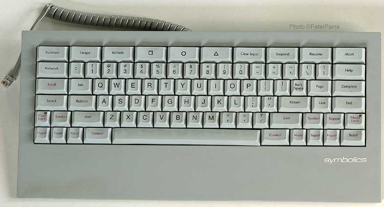

Tech
Migration to github
Tags: Tech, Date: 2014-09-25
Due to the bash security hole that keeps giving, I had to disable gitweb at http://quotenil.com/git/ and move all non-obsolete code over to github. This affects:
OfflineIMAP with Encrypted Authinfo
Tags: Tech, Date: 2011-02-26
I've moved to an
OfflineIMAP + Gnus
setup that's outlined at
various
places.
Gnus can be configured to use
~/.authinfo as a
netrc style of file to read passwords from and can easily use
encrypted
authinfo
files as well. Offlineimap, on the other hand, offers no such
support and passwords to the local and remote imap accounts are
normally stored in clear text in .offlineimaprc.
... read the rest of OfflineIMAP with Encrypted Authinfo.
Upgrade Woes 2
Tags: Tech, Date: 2010-02-08
Debian Squeeze finally got Xorg 7.5 instead of the old and dusty 7.4. The upgrade was as smooth as ever: DPI is off, keyboard repeat for the Caps Lock key does not survive suspend/resume and the trackpoint stopped working. Synaptics click by tapping went away before the upgrade so that doesn't count.
Upgrade Woes
Tags: Tech, Date: 2009-11-06
Debian Lenny was released back in February. My conservativeness only lasts about half a year so I decided to upgrade to Squeeze aka Debian testing. The upgrade itself went rather smoothly with a few notable exceptions. With KDE 4.3 I should have waited more.
... read the rest of Upgrade Woes.
Space Cadet
Tags: Tech, Lisp, Date: 2008-12-15
Emacs users often report problems caused by strain on the pinky finger that's used to press the Control key. The standard answer to that is to map Caps Lock to Control. I believe that there is a better way:

Note the placement of modifiers: Control, Meta, Super, Hyper on both sides of Space in this order, with Control being the closest to it. Touch typers especially find having two of each key absolutely essential and the symmetric placement appeals to me.
... read the rest of Space Cadet.
Backup
Tags: Tech, Date: 2008-03-28
My carefully updated list of files to backup had grown so long that it made me worry about losing something important and the backup didn't fit on a single dvd so I invested in a WD passport and created an encrypted file system on it:
modprobe cryptoloop
modprobe aes
losetup -e aes /dev/loop0 /dev/sdb
mke2fs /dev/loop0
tune2fs -i 0 -c 0 -j /dev/loop0
... read the rest of Backup.
First post
Tags: Personal, Tech, Date: 2008-02-01
After a long time of waiting to write my own blog software like true hackers with infinite time do (and those irritated by Wordpress), I bit the bullet and installed blorg - a very low overhead emacs blog engine - on top of org-mode that I happen to use as an organizer. Blorg basically converts an org mode buffer to html files so it is completely static: send me email if you have comments, I have no desire to maintain a more complex solution with comment filtering.
Small fixes had to be made for blorg to be able to deal with org-mode 5.17a and I only had time to bring it to some basic level of functionality. That said here is the blorg-init.el file I'm using right now.
2020-05-03: Since then, this blog has been moved to MGL-PAX.